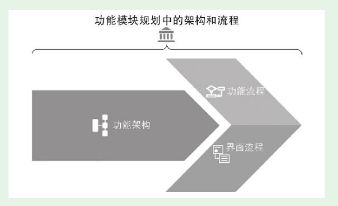
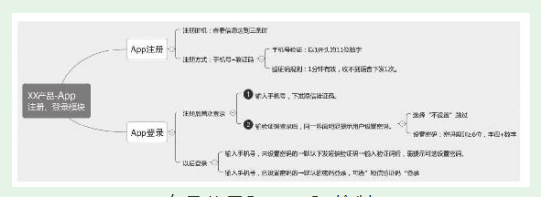
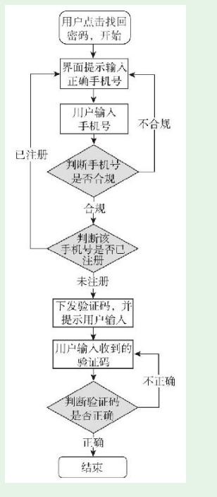
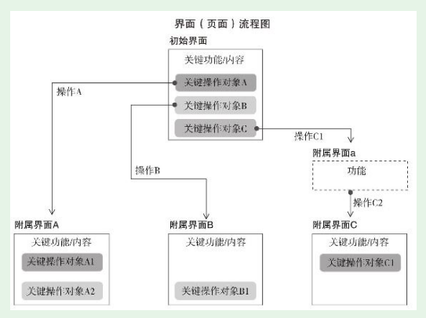

1. 第4节 功能模块规划的流程
- 功能模块规划的前三步，可以概括为一个架构、两个流程

1.1. 第一步，规划功能架构
1.1.1. 示例——app端登录规划
- 产品新人App端的注册登录模块的规划工作
- 修改了的思维导图

1.2. 第二步，规划功能流程
- 功能流程可以用文字表述，但不便于他人理解，通常用上一节讲过的重要工具——流程图
- 是注册登录模块中，找回密码这个功能点的功能流程图

1.3. 第三步，规划界面流程
- 一个功能模块在用户使用时有哪些界面？每个界面关键功能和内容是什么？用户在界面做什么操作，然后去了哪里？
- 有了界面流程图，版本的框架就成型了。

1.4. 第四步，规划界面原型
- 界面原型也叫页面原型，规划出来的界面，和用户最终见到的界面已经比较接近了。
1.5. 第五步，规划交互
- 但现在随着用户端的丰富，用户的要求增加，有些地方仅依靠默认的简单交互已不够，需要进行专门的交互规划。实战中，大多数产品针对部分重要的环节进行专门的交互规划，多数地方仍然用基本交互。
1.6. 不忘初衷——适合场景的功能规划
- 功能模块规划要不忘初衷，这个初衷就是打造出适合场景的功能。产品功能要满足用户需求，但只有充分考虑应用场景才能真正满足用户需求。
- 产品新人在进行功能模块规划时，要不忘初衷。简单、复杂不是标准，适合场景才是———通讯录同步软件
1.6.1. 随手练习
你本人在实际使用产品的过程中，有没有注意到什么产品的功能规划特别适合你当时的场景？ 这个产品是：坚果云 当时的场景描述：我想要在手机上看一个电脑写的文档，但电脑开机、打开文档操作费时 描述一下这个功能：能把电脑和手机的文件进行本地同步